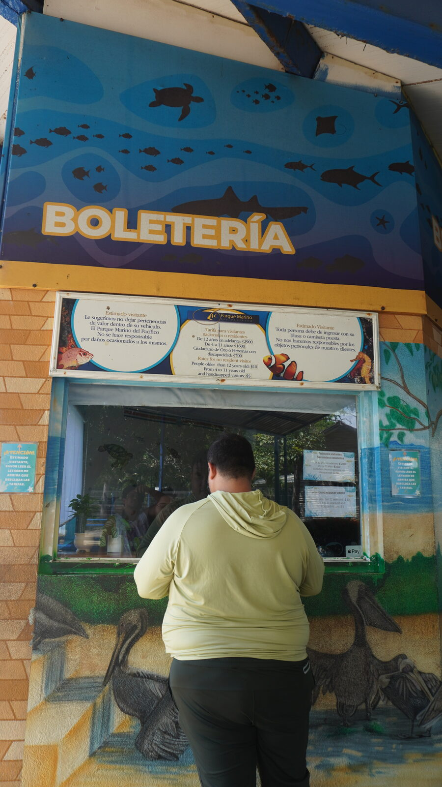
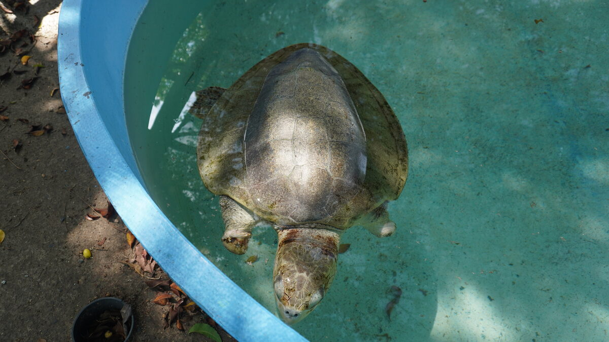
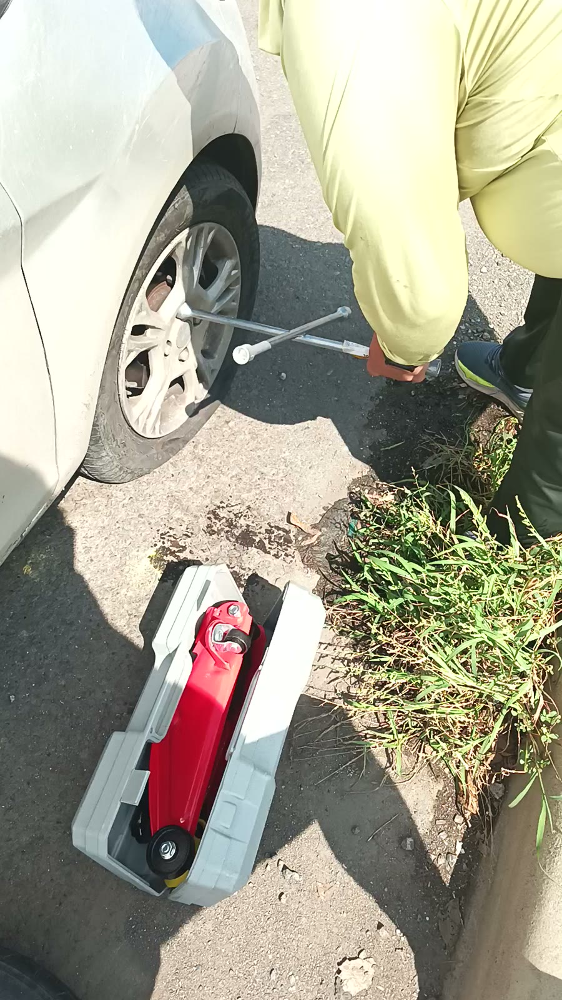

合上我人生中最大的一个圆
2016 年 7 月
2016 年 7 月底的某个周五还是周六，我照常在参加一个科技活动；这次在危地马拉安提瓜，主题是 3D 打印和创业。我最好的朋友之一 Sebas 在那里带工作坊。下午两点我就往回赶，因为三点有一场球赛：我有 30 分钟回家拿球鞋和球衣，再走 15 分钟去球场。那时我用的是一部“小豆子”手机（那种不智能、只能打电话的手机；说实话，现在我又有点想要了），所以想联系我只能打电话，而且没几个人有我的号码。
我在 Santa Lucía 站下了公交车，往当时住的房子走，大概 500 米。这时一辆车停下来：是我一个表兄弟的叔叔，家里的朋友，平时爱开过分的玩笑。车上还有他太太和小女儿。
“卷毛，去哪儿？”
“回家，我要去踢球。”
他吃惊地看着我，气氛一下子尴尬起来。然后他说：
“听着，你哥哥在湖里淹死了。”
我没听懂他在说什么，心想：“啊，又是他的玩笑吧。”和往常一样，我谁的话都不信 哈哈哈。我告诉他我刚回来，没人给我打电话，也没人跟我说什么，我上去问问。
“啊，好。有事给我打电话，我们在这儿。”
“好，谢谢。”
我路过一个朋友家，在我看来他是我最好的朋友之一 哈哈哈（他说不是，但这个故事是我在讲，所以我说是）。
“JUAAAAAAAANJOOOOO！”我像往常一样大喊。
他出来了，我说：
“喂，他们说 Hanz 死了。”
“是啊，兄弟。刚有人打电话问我知不知道什么。他们说：‘我们不确定是不是真的，但知道你们俩关系很好，好像他死在湖里了。’”
我们俩都愣住了。我让他陪我一起，我们去了我外婆家。那里有一段很陡的上坡，路上大概有三个人停下来向我致哀。我还是没明白过来。
2017 年 3 月
我第一次去哥斯达黎加是 2017 年 3 月 14 日那一周，带着攒下的 300 美元：140 花在机票上，剩下的换成了科朗。出发前两天，我联系了一个刚认识的朋友，我们是因为一起上了《福布斯》才认识的：
“兄弟，能让我在你家借住吗？”
“行啊，来吧。”
“好，我两天后到。”
我早就把票都买好了，心里知道他一定会答应。
我去哥斯达黎加，是为了逃离孤独、悲伤，和八个月前哥哥留下的空洞。那是我第一次有清晰记忆的坐飞机。我去了 Carrizal、圣何塞、La Sabana 公园，还有公园里那座巨大的体育场，别的没去什么地方。我的行李就是几件 T 恤、一条裤子、一个本子、一支笔和几张照片。
我在哥斯达黎加过了 22 岁生日，和一个我原本完全不认识的家庭一起；但在那三天里，他们把我当成自家人。我们买了一个“queque”（哥斯达黎加人对蛋糕的叫法），八个多月来，我第一次忘了自己在难过。
第二次是 7 月，去哥斯达黎加大学参加 ECSL（中美洲自由软件大会）带工作坊。最开心的是，我最好的朋友之一 Lexo 也来了（后来我们闹翻了 哈哈哈）：我去接他，我们一起去讲课，特别棒。
2026 年
从那里我直接跳到今年。几个月前我住在 Xela（克萨尔特南戈），心想再出国会有多难：因为钱，因为人会变，大家都变了，疫情也在我们心里留下一个大洞。我们和中美洲各地的朋友聊过，但一直没有什么实际进展。我是想去的，我有这个愿望，但和很多次一样，我缺少靠自己去做、去追梦、去掌控梦想的决心。
二月来了一个消息：“喂，我们要给一家公司做一个人形机器人。”我当时：“啊，别闹了 哈哈哈，好麻烦，工作量太大，我不想做。”闹完脾气，我还是答应了。机器人四月到货，我们只有三天时间组装好，并在一个科技活动上展示。三天三夜我们没睡，多亏了 Claude，我三天三夜就成了 AI 专家。在那个活动上，有人邀请我们去萨尔瓦多展示 Hermes，我们说：为什么不呢？时隔七年再去萨尔瓦多，感觉像第一次一样，但这次是我自己开车：第一次在国外开车，也是第一次开这么远。
那几个月我去看我妈，她问我：
“你在那儿上班，他们给你的钱多吗？”
我怎么跟她解释我是合伙人，付钱的是我？哈哈哈。
“多，多，当然。”
但我跟她解释，这份工作让我的生活方式更轻松：我在短时间里拼命干，月里剩下的时间过得比较悠闲，所以能做更多事情。我这样挺好，因为我知道，一旦我按我会的方式全力工作，就停不下来了，所以现在要好好把握。
六月我们和 José 还有几个朋友聊天，José 突然说：
“我想骑自行车去哥斯达黎加。”
我：“啊，酷，有意思。”九月我们又一起办了一场黑客松，这个想法变得更认真了，于是我对他说：
“好，走吧。我开车跟着，一路照顾你。”
说到做到。
十月我告诉房东阿姨，我三天后搬走，会把一切打扫干净。周四开始打包，周五继续，周六早上我们已经在把东西搬上卡车、打扫卫生，我正式离开 Xela。东西运到了外婆家；我下午三点出发，晚上七点到，只是睡一觉、拿出旅行的衣服，第二天一早去首都和安提瓜。这个博客的整条路线，就是从那里开始的。
11 月 10 日：蓬塔雷纳斯 → 圣何塞
就这样来到了今天。我们离开蓬塔雷纳斯前往圣何塞，但出发前先去了太平洋海洋公园。对，就是昨天关门的那个 哈哈哈。今天开门了，我看到动物就特别开心。给大家放几张照片：




José 从灯塔海滩出发骑车，然后……猜猜发生了什么？哈哈哈。我们的惯例是让他先骑，我在前面等他，所以我在蓬塔雷纳斯的哥斯达黎加大学校区对面等着，砰：胎压过低警报。我下车看了看轮胎，心想：“啊，撑得住。”确实撑住了，又开了大概 10 公里。
José 骑完了他的 20 公里，我们把自行车装上车，他坐进车里，砰：轮胎彻底瘪了。
我们换上备胎，结果备胎也是瘪的 哈哈哈。车速从 80 公里降到 5 公里，我们慢——慢——地挪到一个看起来能换轮胎的地方，结果不是：那是个修车铺，连气都没帮我们打。最后终于找到了补胎的地方；在哥斯达黎加叫 llantera，在尼加拉瓜叫 vulcanizadora，在危地马拉叫 pinchazo。可——是——我们没有现金 :)

他们收了 2,700 科朗。如果你一直在追这个博客，应该记得我在边境取款机剩下的 4,000 科朗。它们终于派上用场了：我付了补胎钱，我们继续上路。
我们走过很漂亮的公路，就是那种你来哥斯达黎加时期待看到的路，还看到一些很有意思的东西，比如“presas”（这里对堵车的叫法），还有收费站：路本来是两车道，到了收费站突然扩成十车道，就为了收费，过后又收窄成一条。我觉得太超现实了 哈哈哈。
我们到了 José 朋友家，安顿下来，卸了东西。正准备吃晚饭，她男朋友说：
“我要去市政府一趟，你们去吗？”
我开了三个小时车之后：
“去啊，走 哈哈哈哈。”
结果我坐进了 Alajuelita 市议会的会议 哈哈哈哈。
我们回到家，聊到大概十二点，一点左右睡下。第二天早上他们告诉我们，我睡着的时候，警察来了，想看看我们是谁、在这里干什么 哈哈哈。José 的朋友们把事情解决了，我只听到了这段趣事。
进入圣何塞对我意义重大，因为我是十年后再来到这里。没那么悲伤了，也没那么年轻了。我不再是从前那个机灵的毛头小子，但我是设计机器人的工程师。我不再是那个只会讲课的小伙子：我是组织活动、邀请更多人参与的人，甚至在其他国家。我不再是那个不知道该做什么的胆小鬼：我是那个以为自己知道想要什么的胆小鬼，来到哥斯达黎加，是为了实现拥有一家跨国公司的梦想。
哥哥的离世已经不像十年前那么痛了。痛少了，但从未停止：那种空洞、孤独，生活感觉不一样了。这一次我不是一个人来，而是和 José 一起。他有点像我哥哥，因为我们都没有顾忌，不懂得衡量风险。但他也像我，或者说像我长大后想成为的样子。
José 提醒我，有些事就是为了做而做。就像十年前，我对哥哥说：“兄弟，凌晨两点去球场踢球吧，顺便把灯打开，交税不就是为了这个嘛。”于是我们一群傻小子凌晨两点去踢球，因为可以，因为我的小镇很安全。
José 不是 Hanz，José 也不是 Yeffri，José 就是 José。但他让我想起了曾经被我放下的东西。
就这样，我们完成了去程，从危地马拉到哥斯达黎加：17 天，1,366 公里。接下来的几周会很复杂、很忙碌，但我们在这里，而且我们不害怕。
谢谢你读到这里。如果你读了，希望你告诉我，让我知道一路上都有谁陪着我。爱你们，25 号危地马拉见。
👆 点击地图上的任意一个点，即可阅读当天的章节。